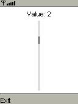

|

|
 |
PLabel label;
PScrollBar scrollbar;
int value;
void setup() {
label = new PLabel("Value: " + value);
label.align = CENTER;
label.calculateBounds(4, 4, width - 8, height);
label.setBounds(4, 4, width - 8, label.height);
label.initialize();
int y = label.y + label.height + 4;
scrollbar = new PScrollBar();
scrollbar.setBounds((width - 4) / 2, y, 4, height - y - 4);
scrollbar.setRange(0, 8, 1);
scrollbar.initialize();
}
void draw() {
background(255);
label.draw();
scrollbar.draw();
}
void keyPressed() {
switch (keyCode) {
case UP:
value = max(0, value - 1);
break;
case DOWN:
value = min(8, value + 1);
break;
}
label.text = "Value: " + value;
scrollbar.setValue(value);
} |
 Reference
Reference